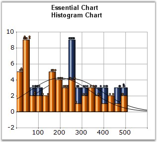

Histogram is a bar (column) chart of a frequency distribution in which the widths of the bars are proportional to the classes into which the variable has been divided, and the heights of the bars are proportional to the class frequencies. The categories are usually specified as non overlapping intervals of some variable. The categories (bars) must be adjacent. In addition, the chart has the capability to draw a normal distribution curve.
Histograms are useful data summaries that convey the following information:
· The general shape of the frequency distribution. (normal, exponential, etc.)
· Symmetry of the distribution and whether it is skewed.
· Modality - unimodal, bimodal or multimodal.
The shape of the distribution conveys important information such as the probability distribution of the data.

Figure 48: Chart displaying a Histogram Series
Chart Details
|
Details | |
|
Number of Y values per point |
1. |
|
Number of Series |
One or more. |
|
Cannot be Combined with |
Pie, Bar, Polar, Radar. |
|
[C#]
// Create chart series and add data points into it. ChartSeries series = this.ChartWebControl1.Model.NewSeries("System 1",ChartSeriesType.Histogram); series.Text = series.Name;
series.Points.Add( 3, 1020 ); series.Points.Add( 45, 440 ); series.Points.Add( 23, 605 ); . . . . .
// Add the series to the chart series collection. this.ChartWebControl1.Series.Add(series); |
|
[VB.NET]
' Create chart series and add data points into it. Dim series As ChartSeries = Me.ChartWebControl1.Model.NewSeries("System 1",ChartSeriesType.Histogram) series.Text = series.Name
series.Points.Add(3, 1000) series.Points.Add(45, 1000) series.Points.Add(23, 1000) . . . . .
' Add the series to the chart series collection. Me.ChartWebControl1.Series.Add(series) |
|
Customization Options |
|
Border, ColumnDrawMode, DisplayShadow, DisplayText, DrawSeriesNameInDepth, ElementBorders, HighlightInterior, ImageIndex, Images LightAngle, LightColor, PhongAlpha, Rotate, Spacing, Spacing Between Series, ShadingMode, ShadowInterior, ShadowOffset, FancyToolTip, Font, Interior, LegendItem, Name, PointsToolTipFormat, SmartLabels, Summary, Text, TextColor, TextFormat, TextOffset, TextOrientation, Visible |